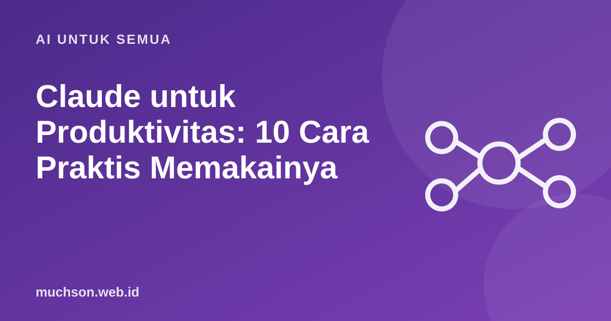

Beranda › Artikel › AI untuk Semua
AI untuk SemuaClaude untuk Produktivitas: 10 Cara Praktis Memakainya
Asisten AI paling berguna ketika dipakai pada tugas yang tepat. Berikut sepuluh pemakaian Claude yang sering menghemat waktu, dengan contoh permintaan yang bisa Anda tiru. Prinsipnya berlaku juga untuk asisten AI lain.

Prinsip yang menentukan hasil
Claude dibuat oleh Anthropic dan dirancang untuk percakapan, penulisan, analisis, dan pengodean. Seperti asisten AI lain, kualitas jawabannya sangat dipengaruhi oleh kejelasan permintaan Anda: tujuan, pembaca, format, dan contoh. Dan seperti semua model bahasa, ia bisa keliru, sehingga hasil penting tetap perlu Anda periksa. Fitur dan batas pemakaian produk berubah dari waktu ke waktu, jadi cek informasi terbaru di situs resminya.
Sepuluh cara memakainya
| # | Tugas | Contoh permintaan |
|---|---|---|
| 1 | Merangkum dokumen panjang | Ringkas laporan terlampir menjadi 7 poin dan 3 risiko utama untuk pembaca yang sibuk. |
| 2 | Menulis draf email atau pesan | Buat email penolakan penawaran yang sopan dan menyisakan pintu untuk kerja sama di masa depan. |
| 3 | Menjelaskan konsep sulit | Jelaskan konsep bunga majemuk seperti kepada siswa SMA, dengan satu contoh angka. |
| 4 | Brainstorming | Beri 15 ide judul presentasi tentang keamanan data untuk karyawan non-teknis. |
| 5 | Merapikan tulisan | Perbaiki tata bahasa dan buat lebih ringkas tanpa mengubah maksud. Tandai bagian yang Anda ubah. |
| 6 | Menganalisis data kecil | Dari tabel ini, apa tiga tren utama dan apa yang perlu diperiksa lebih lanjut? |
| 7 | Menyusun rencana | Susun rencana belajar Python 4 minggu untuk pemula yang punya 1 jam per hari. |
| 8 | Membuat template | Buat template notulen rapat dengan kolom keputusan, penanggung jawab, dan tenggat. |
| 9 | Membantu coding | Jelaskan error ini dan beri dua cara memperbaikinya beserta alasannya. |
| 10 | Latihan dan simulasi | Berperan sebagai pewawancara kerja, ajukan satu pertanyaan sekali jalan, lalu beri umpan balik jawaban saya. |
Susun permintaan Anda
Hal yang tetap harus Anda periksa
Hindari memasukkan data pribadi atau rahasia perusahaan ke asisten AI kecuali Anda memahami kebijakan data layanan itu dan diizinkan oleh organisasi Anda.